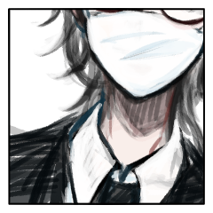

GM
DXST 出島EXシーン表(4)
＞ 死者たちの行進。無念の死を遂げた者たちが、仲間を求めて彷徨らっている。このシーンの登場人物は《死霊術》で判定を行わなければならない。失敗すると、ランダムに変調を一つを受ける。
GM
自分らと同じ場所へと誘い込もうとするものたち。
GM
しかし今この瞬間、全てを見過ごすことはできず、
雨野 いよ
成人の儀。
シノビガミとなるための儀式。
雨野 いよ
天之の家も、雨野の家も、自分たちの思い描いた通りに進むと思っているだろう。
雨野 いよ
韴子も、志筑様も、もっくんも、私も。
それぞれが成したいことをするためにここに立つ。
雨野 いよ
世界のため。
そして、自分や大切な人のため。
雨野 いよ
そのための覚悟はできている。
思い残しはもうない。
静居 黙雷
この四人の中に、比良坂は三人。
二人は神。そして一人は人間だ。
静居 黙雷
祝詞を上げる。
神に奏上する言葉。
恩頼を祈願する言葉。
静居 黙雷
──神様、二人はこれほど健やかに、立派に成長しました。
静居 黙雷
──これから成人の儀を行い、天帝の眼の受け継ぎを行います。
静居 黙雷
──どうか、世界を守護し、祝福し、見守っていてください。
静居 黙雷
唇から滑り出る言葉に、心が伴わない。
誰も死ななければいいのに、と思う。
静居 黙雷
しかし、人間にできることは限られている。世界を救う力も、誰かを救う力もない。
静居 黙雷
それでも、やれることはまだ残っている。それがとても残酷で、優しい事実だ。
静居 黙雷
何年か前にも、同じように祝詞を上げた。
静居 黙雷
この子達に降りかかる全ての災難から守ってください。そんな内容だ。
静居 黙雷
儀式は終盤へ向けて、つつがなく進む。時間は経過する。子供は大人になってしまう。
静居 黙雷
泣いても時間は待たない。やれることをやるしかない。
天之 韴子
祝詞が終われば、立ち上がり、盃の酒を一口。羽衣が揺れる。
天之 韴子
志筑の前に立ちはだかるのに、相応しい壁でなければならない。
天之 韴子
この場に居るのは志筑だけではない。かつて自分を育てた大人が、遠く及ばなかった黙雷といよが、同じ舞台にいる。
天之 韴子
成人の儀とは、大人になるための儀式。大人になったことを実感するための儀式でもある。
静寂ヶ原 志筑
自らも神酒に口をつけてから、手を振る韴子に目で頷く。
静寂ヶ原 志筑
成人の儀。
それを待っていたわけでも、来なければいいと思っていたわけでもない。
静寂ヶ原 志筑
おれたちは生きていて、だから時は進んで、変わるものがあり、変わらないものがある。
静寂ヶ原 志筑
お前は、変わらないものなんてないって言うけど。
静寂ヶ原 志筑
おれは、小さいときからずっと変わらずに、お前のことが一番大切だよ。
静寂ヶ原 志筑
やるべきことは自分で決めた。自分で選んだ。
静寂ヶ原 志筑
震えてもいないし、冷たくもない。熱くもない。
静寂ヶ原 志筑
ずっとお前を追いかけてきた。
ずっとお前が憧れだった。
静寂ヶ原 志筑
大切にすると、し続けると、そう言うために。
GM
共に育ってきた。一緒に生きてきた。長く傍にいた相手の。
GM
ただ静かに、ただ自然に、天がそれを告げるように、
GM
それぞれダイスを隠した状態で自分のコマの右側に置いていただいて、プロットする数値に出目を合わせていただきまして。
GM
その上でGMにディスコードの秘話にて報告してください。
GM
できたらプロット確定をメインタブで発言して頂き、４人揃ったらGMから開示の号令を出します。
GM
というわけで……ラウンド１のプロットをお願いします！
静居 黙雷
2D6>=5 （判定：罠術） (2D6>=5) ＞
4[2,2] ＞ 4 ＞ 失敗
[ 静居 黙雷 ] がダイスシンボルを公開。出目は 3 です。
[ 静寂ヶ原 志筑 ] がダイスシンボルを公開。出目は 5 です。
[ 雨野 いよ ] がダイスシンボルを公開。出目は 4 です。
[ 天之 韴子 ] がダイスシンボルを公開。出目は 4 です。
GM
◆ラウンド１
プロット５：志筑 ４：韴子 いよ ３：黙雷
静寂ヶ原 志筑
韴子を対象に笹貫。痛打を組み合わせます
静寂ヶ原 志筑
2D6>=6 （判定：刀術） (2D6>=6) ＞
5[2,3] ＞ 5 ＞ 失敗
静寂ヶ原 志筑
刀を抜く。まだゆるやかな所作。
けれど先には震えなかった手も、相対すれば、じわりと。
GM
韴子といよは2D6を。出目の低い方から処理します。
天之 韴子
2d (2D6) ＞
11[5,6] ＞ 11
雨野 いよ
2d6 (2D6) ＞
7[3,4] ＞ 7
雨野 いよ
成人の儀、その舞台に上がっている二人。
雨野 いよ
この場はもう忍の戦場であることはわかっている。
雨野 いよ
それでも、この成人の儀が祝言の儀であったら。
何かを失い、世界を救うための場でなければ。
どれほどよかっただろう。

雨野 いよ
思い残したことはなくても、雨野いよの愛情が一歩を踏み出すことを躊躇わせる。
天之 韴子
2D6>=5 （判定：罠術） (2D6>=5) ＞ 5[2,3]
＞ 5 ＞ 成功
GM
成功ですね。以降韴子が脱落するまでの間、神槍を使用するたびに使用者に１点の接近戦ダメージが入ります。
天之 韴子
2D6>=5 （判定：九ノ一の術） (2D6>=5) ＞ 7[1,6]
＞ 7 ＞ 成功
GM
韴子は接近戦の分野決定の1D6をお願いします。
GM
揺らしが乗っているので、接近戦ダメージ１点と射撃戦ダメージ１点。
[ 静寂ヶ原 志筑 ] 謀術 : 1 → 0
[ 静寂ヶ原 志筑 ] 戦術 : 1 → 0
天之 韴子
2D6>=5 （判定：骨法術） (2D6>=5) ＞
10[4,6] ＞ 10 ＞ 成功
天之 韴子
2D6>=5 （判定：九ノ一の術） (2D6>=5) ＞ 8[4,4]
＞ 8 ＞ 成功
GM
バシバシ通す。接近戦ダメージ１点と揺らしの射撃戦ダメージ１点。
[ 静寂ヶ原 志筑 ] 器術 : 1 → 0
[ 静寂ヶ原 志筑 ] 忍術 : 1 → 0
[ 静寂ヶ原 志筑 ] 謀術 : 0 → 1
[ 静寂ヶ原 志筑 ] 戦術 : 0 → 1
[ 静寂ヶ原 志筑 ] 忍具 : 2 → 0
天之 韴子
足を止めたいよの横をすり抜け、扇子で志筑の刀の動きを制する。
天之 韴子
ぴたりと張り付く至近距離。全身が触れて、わずかに体勢を崩させる。
天之 韴子
その勢いを乗せて、受け止める形で掌底が打ち込まれた。風が生じてその身を吹き飛ばす。
静寂ヶ原 志筑
崩される。踏み留まることができず。
天之 韴子
羽衣を揺らしながらふわりと近づいて、したたかに利き腕を叩いた。
天之 韴子
自分より強い者は山ほどいる。しかし自分を追い抜いた者はいない。
天之 韴子
今日、今、ここで抜かれることがなければ、きっと。
静居 黙雷
2D6>=5 （判定：縄術） (2D6>=5) ＞ 6[3,3]
＞ 6 ＞ 成功
[ 静寂ヶ原 志筑 ] 戦術 : 1 → 0
[ 静寂ヶ原 志筑 ] 妖術 : 1 → 0
静居 黙雷
地に広がる、蛇のように長くのたうつ鎖。人を縛るもの、人を阻むもの。
静居 黙雷
黙雷は志筑のお目付け役であり、師ではない。手合わせをする機会も多くはなかった。
静居 黙雷
志筑のことを、黙雷はずっと見守ってきた。その戦い方も。
静居 黙雷
袖を振る。神に祈るように。
鎖が少年の体を縛る。
静寂ヶ原 志筑
邪魔をしてくれるなと、そう言いたい気持ちが、志筑の眉を寄せる。
静寂ヶ原 志筑
それでも、黙雷がそうする理由がわかるから。
静寂ヶ原 志筑
したたか打たれようと、鎖に巻かれようと、今はまだ倒れていないから。
GM
鎖陣を受けたため、これ以降志筑の回避判定に-1の修正がつきます。
GM
脱落者は……出ないでしょう。いたら言ってください。
静居 黙雷
2D6>=5 （判定：罠術） (2D6>=5) ＞
2[1,1] ＞ 2 ＞ ファンブル
静居 黙雷
KWT 怪変調表(2) ＞
マヒ:修得している特技の中からランダムに一つを選び、その特技が使用不能になる。この効果は、修得している特技の数だけ累積する。各サイクルの終了時に、《身体操術l》で行為判定を行い、成功するとこの変調はすべて無効化される。
GM
1D6をどうぞ。キャラクターシート、右の特技一覧の上から1D6番目という裁定にします。
GM
それはそれとしてプロットしていただいて……なんか演出する？ したらいいんじゃないですか。
GM
ごめん振り直しで。KFTをお願いします。間違って変調表ふらせちゃった
静居 黙雷
KFT 怪ファンブル表(5) ＞
敵の陰謀か？ 罠にかかり、ランダムに選んだ変調一つを受ける。変調は、変調表で決定すること。
GM
なんか……プロット決めつつ……演出するといいと思うよ。
静居 黙雷
鎖が地を這う、地に潜る。
罠を巡らせる。
静居 黙雷
これは志筑を阻む鎖。これはいよを捉える鎖。
静居 黙雷
俺のやりたいようにやらせろと、俺の意思を押し付ける罠。
静居 黙雷
皆それぞれに考えて、それぞれの意思を持ちここに立っている。それに優越はない。この自分を含めて。
静居 黙雷
皆、それぞれに心がある。それぞれにやりたいことがある。
静居 黙雷
お互いがお互いを大事に思うからこそ、刃を向けている。
GM
ではラウンド２のプロット開示をお願いします！
[ 静居 黙雷 ] がダイスシンボルを公開。出目は 3 です。
[ 静寂ヶ原 志筑 ] がダイスシンボルを公開。出目は 4 です。
[ 雨野 いよ ] がダイスシンボルを公開。出目は 3 です。
[ 天之 韴子 ] がダイスシンボルを公開。出目は 4 です。
GM
◆ラウンド２
プロット４：志筑 韴子 ３：黙雷 いよ
静寂ヶ原 志筑
2d6 (2D6) ＞
3[1,2] ＞ 3
天之 韴子
2d6 (2D6) ＞
7[3,4] ＞ 7
静寂ヶ原 志筑
2D6>=6 （判定：刀術） (2D6>=6) ＞ 7[1,6]
＞ 7 ＞ 成功
静寂ヶ原 志筑
効果：完全成功/くらまし/分野限定（体術） 指定特技：医術
静寂ヶ原 志筑
この場で、たぶん。志筑は一番弱い。
けれど、それを厭うたことはない。
強くなりたいと望み続けてきた。そうして積み重ねてきた。
静寂ヶ原 志筑
静かな風のように。
目には見えず、耳に聞こえず。
静寂ヶ原 志筑
追いすがる刃に、血の紅色を結ぶようにと。
GM
笹貫の回避判定に10以上の出目が必要になります。
天之 韴子
2D6>=11 （判定：骨法術） (2D6>=11) ＞
5[1,4] ＞ 5 ＞ 失敗
GM
命中ですね。接近戦ダメージが２点。
志筑は分野決定の2D6を。
静寂ヶ原 志筑
2d6 (2D6) ＞
4[1,3] ＞ 4
[ 天之 韴子 ] 器術 : 1 → 0
[ 天之 韴子 ] 忍術 : 1 → 0
GM
一旦演出かな。韴子ちゃんの方からがよさそう。
静寂ヶ原 志筑
打たれた腕も、いつものこと。
痛いよ。でも、お前とやりあってそうじゃないことなんてない。
静寂ヶ原 志筑
羽衣の一部が、肌を巻き込んで大きく裂けて。
静寂ヶ原 志筑
かみさまの衣装を、その形を、崩させる。
天之 韴子
けれど、ここまで痛い思いをしたのは初めての事。
天之 韴子
ここまで本気でやりあったのは初めての事。
天之 韴子
手を抜いたわけではない。けれどお互い、大きなけがをしないようにぶつけ合っていた。お互い、奥義を晒すことはなかった。
天之 韴子
ここまで強かに打たれたのも、ここまで深く当てられたのも。
天之 韴子
優しい志筑の刃から、死を感じ取ったのも、初めての事だった。
天之 韴子
乱れた衣装はそのままに、後ろへと引く。
天之 韴子
「（まだ終わりたくないよ。終わらせたくない）」
天之 韴子
──なるようになってきたからね。今回も、待ってればいい感じに望む結果になるよ、きっと。
天之 韴子
「（もうすこし、あと一呼吸か二呼吸か。そんなぐらいの少しだけ）」
天之 韴子
2D6>=5 （判定：縄術） (2D6>=5) ＞ 7[2,5]
＞ 7 ＞ 成功
雨野 いよ
2D6>=10 （判定：針術） (2D6>=10) ＞
10[5,5] ＞ 10 ＞ 成功
天之 韴子
瞬間、即座に向きを変えて、その行く先をいよの方へ。
雨野 いよ
ぼうっとしたような、心がここにないようにただ見ているだけのいよ。
シノビとしては致命的な隙。
雨野 いよ
韴子の動き出しを咎めるだけの、細く見えない針を放つ。
天之 韴子
糸も、直前の動きも、避けられる素振りも。
雨野 いよ
攻撃が届くはずの、ほんの少し先に立ち2人きりの時のように名前を呼ぶ。
雨野 いよ
子供に言い聞かせるように、諭すように告げる。
天之 韴子
──だって、その前に私達は二人がかりで向かって。
天之 韴子
──だって、いよちゃんのことも押さえておかなきゃいけなくて。
天之 韴子
本心が見抜かれているから、その言葉がこんなに胸に突き刺さるのだ。
天之 韴子
ここで私が勝ったら、これが最後なんだ。
天之 韴子
振り上げた扇。攻撃のつもりではなかったが、その扇には風が乗って、見当違いの場所を抉る。
天之 韴子
だんだんと成長するにつれて、奔放に見えて人の顔色を見れる子供になっていった。
天之 韴子
神の使命を知らされた時から、それはより顕著に。
雨野 いよ
韴子はなんでもよくできた。
だだをこねたのはほんのわずかな間だけ。
雨野 いよ
親のように世話をしたのはほんの少し。
実際のところは、少し歳のはなれた姉妹のようで。
雨野 いよ
すくすくと成長して、あっという間に私を超えて。
愛しい、自慢の、妹のよう。
雨野 いよ
「ふーこ。何がしたいのか、どうしたいのかちゃんと言葉にしなさい」
雨野 いよ
「もう、ちっちゃいこじゃないんでしょう？」
天之 韴子
いよの事を、この世の誰よりも死なせたくないと思っていて。
天之 韴子
ここで口にする言葉は、そんな相手に死ねというようなもの。
天之 韴子
口にするとしたら、自分が世界を救う権利を手放した後。
雨野 いよ
「……わかった。でもふーこ、全部は選べないから……」
雨野 いよ
「せめて、いよにだけでも教えて？いよはふーこがどうしたいのか、知りたいな」
天之 韴子
「私に一回。もっくんが志筑にしたみたいに」
雨野 いよ
「……そう、よかった。じゃああんまり、泣かないでね。白粉が落ちちゃうから」
GM
次回は6/14(月)再開。プロット３の行動から始めましょう。
天之 韴子
おつかれさまでした・・・・・・・・・・・・